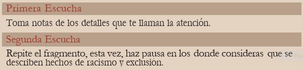

Estación 2
Paso 2: Ahora ya estás listo/a para escuchar el siguiente fragmento de
la obra “El incómodo color de la memoria” y ten presente:

https://youtu.be/svKMvi66UUU?si=juf6pRx2x2mKH3lH
«
1
2
3
4
»
»
Obra “El incómodo color de la memoria”